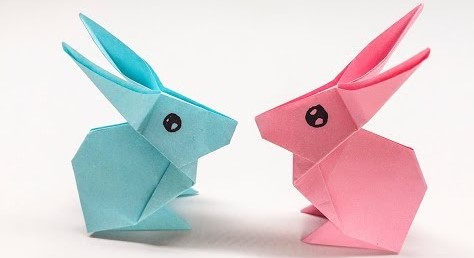

Origami Instructions and Diagrams
Step by Step diagrams are probably the most popular and easiest to follow way to show how to fold things out of paper.
Trying to find good Origami Instructions on internet can be a lot of work though.To help you research we've put
together the largest database of free origami diagrams anywhere on the internet.

Turtle
Some interesting facts about turtles
- Turtle is a creature living on both water and land.
- Turtles are some of the oldest animals around the world,the average lifespan of a turtle is about 150 years.
- Turtles have a second shell.
- The largest turtles weigh more than a thousand pounds.
- Turtles don't have teeth.
- Turtles are very adaptive and can be found on every continent, except Antarctica.
- They communicate by making noises.

Rabbits
Some interesting facts about Rabbits
- Rabbits have four short but powerful legs.
- Rabbit is a herbivores animal, it eats grass, leaves, fruits, vegetables etc.
- Generally, the life of a rabbit is up to 10 to 13 years.
- In order to protect themselves, rabbits dig burrows inside the ground.
- All over the world there are 305 species of domestic rabbits and 13 species of wild rabbits.
- Rabbits have very thick and soft fur.
- Rabbits live in groups and are known as a warren.
Cats
Some interesting facts about Cats
- The oldest known pet cat existed 9,500 years ago.
- Cats spend 70% of their lives sleeping.
- Cats are very friendly pets that are domesticated by more than 40% of the households in the world.
- The average lifespan of a cat varies between 10 to 15 years.
- According to scientists, more than 500 breeds of cats are known in the world.
- Cats can jump as highest six to eight feet and always land on their feet without getting injured.
- Cats have four legs and one tail and they produce a “meow”, “purr” and “hiss” sound.